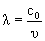
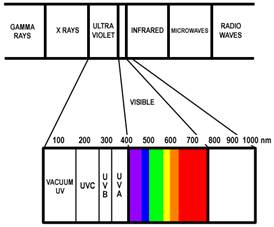
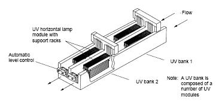
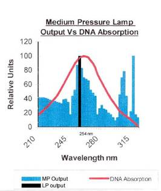

HistoryBy the late 19th century ultraviolet (UV) radiation was established as a biocide responsible for microbial decay. UV radiation prevents cells reproduction by disrupting DNA structure and causes cellular death by attacking carbon-carbon single and double bonds. Introduction of UV into disinfection systems began in the early 1940s. UV radiation has been used since in wastewater treatment plants and for producing potable water on passenger ships. Unfortunately UV applications in municipal water systems have met with little enthusiasm due to the need of a secondary residual disinfectant (Pontius, 1990). Recently the use of UV technology has become more established as a practical method of drinking water disinfection and is an essential component of Ultra Pure Water treatment.
BackgroundUltraviolet radiation is light made of wavelengths that range between 100 nm to 400 nm, just beyond the visible color spectrum. The wavelength, l, is defined by the frequency with respect to the velocity of light, c0, in a vacuum (DeGenova, 2001): |
|
 |
(1)
|
where: n = number of oscillations per second (Hertz). |
|
The UV wavelength range is commonly generalized into four bands: UV-A, UV-B, UV-C and vacuum ultraviolet (VUV). Other terms such as near, far, extreme, or deep UV are used for different applications. |

Figure 1. Electromagnetic wavelength spectrum at nanometer scale
|
The two wavelengths that are most effective for Ultra Pure Water disinfection, 254 nm and 185 nm, are found near the UV-C range. Table 1 summarizes the three UV ranges and their properties. Wavelengths are listed in decreasing order as a convention to increasing frequency above the visible color spectrum. |
Table 1. Ultraviolet Wavelength Properties
|
|
|
|
|
|
|
Wavelengths
(nm) |
Common
uses |
Germicidal
effect |
|
UV-A |
(long) ~400-320 |
black light |
little, none |
|
UV-B |
(middle) ~320-280 |
tanning salon |
moderate, some |
|
UV-C |
(short) ~280-100 |
biocide |
very effective |
UV LampsUV radiation for water disinfection is produced mercury arc lamps. An electric arc is maintained inside a reduced pressure mercury atmosphere. UV radiation is emitted by ionized mercury vapor. Normal glass blocks almost 100% of wavelengths below 330 nm including UV-C wavelengths, so UV lamps for disinfection are designed with a special quartz glass sleeve that surrounds the UV light bulb. This sleeve provides a filter that allows dominant UV wavelength transmission and covers the lamp to minimize the cooling effect from the water.
Average lamp life varies from 8,760 to 14,000 hours, needing replacement after about 12,000 hours (USEPA, 1999). Lamp bulb power is typically reported in watts, comparable to other light bulbs. Power output typically ranges from 40-100 W for low-pressure lamps and 1-5 kW for medium-pressure lamps (Bolton, 2002). An example of a typical UV lamp system is shown below: |

Figure 2. Example UV lamp (USEPA, 1999).
|
Most commercial UV radiation systems are also enclosed in a stainless steel housing that provides added skin and eye protection as well as a convenient flow annulus. Many also have optional light intensity monitoring units available. Some systems utilize an alternative design where water flows inside a tube made of a UV permeable substance, such as Teflon, and UV lamps surround the tube away from water contact.
Low-pressure mercury arc lamps emit light across the entire UV range, but an overwhelming majority of the UV produced is a single dominant wavelength at 253.7 nm. Other dominant emission lines include 313, 365, and 435 nm, as well as a sub-dominant emission line at 185 nm [DeGenova, 2001]. Medium-pressure and high-pressure mercury arc lamps are also available, which produce a more polychromatic range of UV light rather than low-pressure lamps. All three UV lamps are available with low or high intensity. Some are designed with specialized synthetic quartz sleeves to allow all UV emissions 185 nm and above, at 15-20 times more light intensity than low-pressure lamps. These lamps cost about 4-5 times more and require more energy to use, but they can be more economically favorable for larger scale use. Figure 3 below shows wavelength emissions differences between lamp types compared to absorption by DNA. |

Figure 3. Graph comparing Medium and Low Pressure Output (Lenntech, 2005).